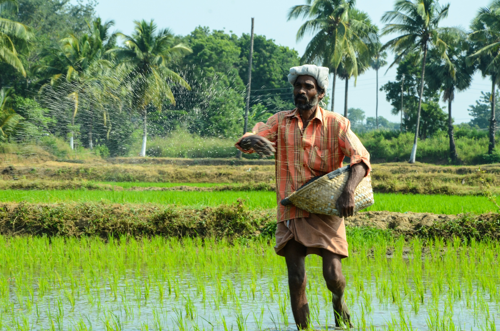

Agriculture
Agriculture is the backbone of our nation.
Agriculture or farming is the practice of cultivating plants and livestock. Agriculture was the key development in the rise of sedentary human civilization, whereby farming of domesticated species created food surpluses that enabled people to live in cities. The history of agriculture began thousands of years ago. After gathering wild grains beginning at least 105,000 years ago, nascent farmers began to plant them around 11,500 years ago. Pigs, sheep, goats, and cattle were domesticated over 10,000 years ago. Plants were independently cultivated in at least 11 regions of the world. Industrial agriculture based on large-scale monoculture in the twentieth century came to dominate agricultural output, though about 2 billion people still depended on subsistence agriculture.

The major agricultural products can be broadly grouped into foods, fibers, fuels, and raw materials (such as rubber). Food classes include cereals (grains), vegetables, fruits, oils, meat, milk, eggs, and fungi. Over one-third of the world's workers are employed in agriculture, second only to the service sector, although in recent decades, the global trend of a decreasing number of agricultural workers continues, especially in developing countries, where smallholding is being overtaken by industrial agriculture and mechanization that brings an enormous crop yield increase.

Components
| season |
crops |
duration |
| Kharif |
maize,jowar |
june-october |
| Rabi |
barley,wheat |
nov-april/may |
| Zaid |
pumpkin,cucumber
|
march-june |
